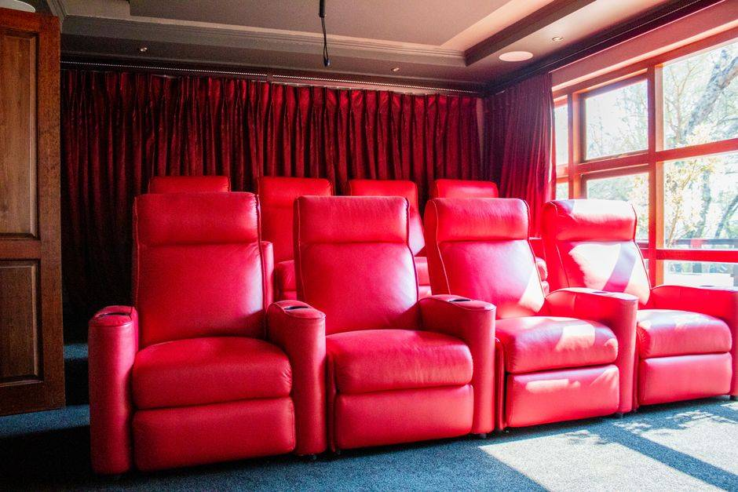

To get rid of an old recliner, unplug it if it is powered, pull any battery pack off, and check whether the back lifts off so it fits through the door. A recliner in good shape can be offered for donation. One that is worn, stained or broken usually has to be hauled, and a two-person crew carries it out in one trip.
Recliners fool people. From across the room it looks like an armchair. Then two people try to lift it and find out it is a steel mechanism with a cushion on top. We haul a lot of them, usually because someone bought a new one, a parent moved somewhere smaller, or the living room is getting a new layout and the old chair is the first thing to go.
Why a recliner is harder to move than it looks
Under the seat of almost every recliner is a metal frame that runs the footrest and the back. That frame is most of the weight, and it does not fold flat. Once the footrest springs open on a staircase, you are holding a chair that has suddenly grown a foot longer.
The EPA counts furniture as one of the bulky durable goods that get handled separately at disposal sites, and it lists ferrous metal as the second largest material in furniture after wood. Its furniture and furnishings data puts 2018 generation at 12.1 million tons, with about 80 percent of it landfilled. A recliner is a good example of why. It is mixed wood, steel, foam and fabric, and none of that comes apart easily.
The good news is that on a lot of recliners the back is built to come off. It sits on two brackets on the sides of the frame and lifts straight up once the locking levers or clips are released. If the back comes off, the chair gets a lot smaller and a lot lighter, and narrow doors stop being a problem.
Power recliners: the motor, the cord and the battery
A power recliner, a power lift chair or a reclining sofa with power seats has a motor under the seat, a power supply with a cord to the wall, and sometimes a battery pack so it can run without a cord.
Before anyone moves it:
- Run it closed. Bring the footrest and back all the way upright while it still has power. A power recliner left half open is much harder to carry, and without power the mechanism will not close.
- Unplug it and coil the cord so nobody trips on it on the way out.
- Check under the chair before anyone works the footrest. Kids and pets get under recliners. Look first, every time.
- Pull the battery pack. If the chair has one, it is usually a separate pack that clips on underneath or behind.
That battery does not go in the trash. The EPA's page on used lithium-ion batteries says lithium-ion batteries should not go in household garbage or recycling bins, and should go to a battery recycling or household hazardous waste collection point instead, with the terminals taped to prevent fires. Most cities around here run a program for that, such as Plano's household chemical collection. We do not haul loose batteries, and we will point you to your city's program.
If the chair came from a medical supplier or was part of someone's care at home, our post on clearing out medical equipment after care ends covers what goes back to the supplier and what is yours to get rid of.
Close it before you unplug it. The most common mistake we see is a power recliner unplugged in the reclined position. The mechanism will not close by hand, and a fully open chair does not fit through most interior doors. Run it upright first, then unplug.
Can a recliner be donated
Sometimes. A recliner that is clean, with no tears, no stains, no pet damage and a mechanism that still works, is worth offering. Habitat for Humanity ReStores take gently used furniture and household goods, with each store setting its own list, so check with the one near you before loading anything.
Be ready for a no on a lot of recliners, though. Upholstered furniture that has been sat in every evening for ten years is hard for anyone to place, and a power recliner with a motor that does not run is harder still. Our guide to donating furniture in DFW covers what donation centers usually take and what they turn away.
The city is another option for an ordinary recliner. In Frisco, bulk trash pickup takes up to five items once a month, placed where your carts are serviced, and you reserve your spot online by noon the business day before. The city's list of things it will not take includes electronic waste and large metal items, so a power recliner is worth asking about before you set it out. Either way, you have to get it to the curb yourself.
What we haul on a recliner job
On a typical living room clear-out, we take:
- standard and rocker recliners, swivel gliders and wall-hugger recliners
- power recliners and power lift chairs, once the battery pack is off
- reclining sofas, reclining loveseats and the separate sections of a reclining sectional
- the ottoman, the side table and the lamp if they are going too
- the old entertainment center if the whole room is being redone
That last one comes up a lot. If the TV wall is changing at the same time, our post on getting the old entertainment center and armoire out covers the pieces that sit across from the chair.
Reclining sofas are the heavy end of this. A power reclining sofa can carry two or three mechanisms in one frame. Around the lake, a lot of those calls start as hauling a reclining sofa out of a Little Elm living room, and the wider junk removal page for Little Elm covers how we work there. Further south, we also handle furniture pickups across Dallas, from a single chair to a whole room, and between Frisco and Little Elm we take worn-out recliners and living room sets out of homes in The Colony.
Where things go after we load them: usable furniture goes to local donation partners, metal goes to recyclers, and our stated goal is to keep more than half of every load out of the landfill.
How the pickup runs
Send us a photo of the chair or the sofa, and tell us whether it is powered, whether it is upstairs, and whether it still reclines and closes. That is all a crew needs to plan the path out.
A crew looks at what is going and gives you a firm number before anything is loaded. The quote is the bill, and disposal is included. We are affordable and priced fair, based on how much there is to take. You point, we carry, we sweep. These are our own crews, not gig labor.
Call before noon and same afternoon is typical across the northern suburbs. When you are ready, tell us what needs to go, or read more about how our furniture removal works.
Frequently asked questions
Do you take power recliners?
Yes. Run the chair upright and unplug it before we arrive. If it has a battery pack, take it off and drop it at your city's household chemical or battery collection point. We do not haul loose batteries.
My power recliner is stuck open. Can you still take it?
Usually, yes. Tell us when you send the photo. A chair that will not close takes more room on the way out, and the crew plans the path around it.
Does the back of a recliner come off?
On a lot of recliners it does. The back sits on brackets on the sides of the frame and lifts up once the levers or clips are released. If yours comes off, the chair fits through narrow doors much more easily.
Will a donation center take my old recliner?
Only if it is clean, undamaged and the mechanism works, and each store decides for itself. Worn or stained recliners and power chairs that do not run are usually turned away.
Can you take a reclining sectional?
Yes. Most reclining sectionals come apart into sections, and each section goes out on its own.
An old recliner was somebody's spot for a long time. When it is ready to go, it can leave in one trip, and the room gets its corner back.